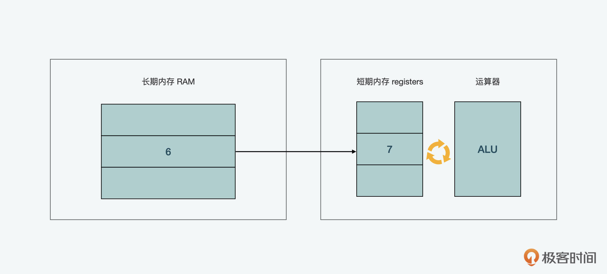

- 00 开篇词 JavaScript的进阶之路.md.html
- 01 函数式vs.面向对象：响应未知和不确定.md.html
- 02 如何通过闭包对象管理程序中状态的变化？.md.html
- 03 如何通过部分应用和柯里化让函数具象化？.md.html
- 04 如何通过组合、管道和reducer让函数抽象化？.md.html
- 05 map、reduce和monad如何围绕值进行操作？.md.html
- 06 如何通过模块化、异步和观察做到动态加载？.md.html
- 07 深入理解对象的私有和静态属性.md.html
- 08 深入理解继承、Delegation和组合.md.html
- 09 面向对象：通过词法作用域和调用点理解this绑定.md.html
- 10 JS有哪8种数据类型，你需要注意什么？.md.html
- 11 通过JS引擎的堆栈了解闭包原理.md.html
- 12 JS语义分析该用迭代还是递归？.md.html
- 13 JS引擎如何实现数组的稳定排序？.md.html
- 14 通过SparkPlug深入了解调用栈.md.html
- 15 如何通过哈希查找JS对象内存地址？.md.html
- 16 为什么环形队列适合做Node数据流缓存？.md.html
- 17 如何通过链表做LRU_LFU缓存？.md.html
- 18 TurboFan如何用图做JS编译优化？.md.html
- 19 通过树和图看如何在无序中找到路径和秩序.md.html
- 20 算法思想：JS中分治、贪心、回溯和动态规划.md.html
- 21 创建型：为什么说Redux可以替代单例状态管理.md.html
- 22 结构型：Vue.js如何通过代理实现响应式编程.md.html
- 23 结构型：通过jQuery看结构型模式.md.html
- 24 行为型：通过观察者、迭代器模式看JS异步回调.md.html
- 25 行为型：模版、策略和状态模式有什么区别？.md.html
- 26 特殊型：前端有哪些处理加载和渲染的特殊“模式”？.md.html
- 27 性能：如何理解JavaScript中的并行、并发？（上）.md.html
- 28 性能：如何理解JavaScript中的并行、并发？（下）.md.html
- 29 性能：通过Orinoco、Jank Busters看垃圾回收.md.html
- 30 网络：从HTTP_1到HTTP_3，你都需要了解什么？.md.html
- 31 安全：JS代码和程序都需要注意哪些安全问题？.md.html
- 32 测试（一）：开发到重构中的测试.md.html
- 33 测试（二）：功能性测试.md.html
- 34 测试（三）：非功能性测试.md.html
- 35 静态类型检查：ESLint语法规则和代码风格的检查.md.html
- 36 Flow：通过Flow类看JS的类型检查.md.html
- 37 包管理和分发：通过NPM做包的管理和分发.md.html
- 38 编译和打包：通过Webpack、Babel做编译和打包.md.html
- 39 语法扩展：通过JSX来做语法扩展.md.html
- 40 Polyfill：通过Polyfill让浏览器提供原生支持.md.html
- 41 微前端：从MVC贫血模式到DDD充血模式.md.html
- 42 大前端：通过一云多端搭建跨PC_移动的平台应用.md.html
- 43 元编程：通过Proxies和Reflect赋能元编程.md.html
- 结束语 JavaScript的未来之路：源于一个以终为始的初心.md.html
- 捐赠
28 性能：如何理解JavaScript中的并行、并发？（下）
你好，我是石川。
在上一讲中，我们初步介绍了并发和并行的概念，对比了不同语言对多线程开发的支持。我们也通过postMessage，学习了用信息传递的方式在主线程和Worker线程间实现交互。但是，我们也发现了JavaScript对比其它语言，在多线程方面还有不足，似乎信息传递本身不能让数据在不同的线程中真正做到共享，而只是互传拷贝的信息。
所以今天，我们再来看看如何能在信息互传的基础上，让数据真正地在多线程间共享和修改。不过更重要的是，这种修改是不是真的有必要呢。
SAB+Atomics模式
前面，我们说过对象的数据结构在线程间是不能共享的。如果通过postMessage来做信息传递的话，需要数据先被深拷贝。那有没有什么办法能让不同的线程同时访问一个数据源呢？答案是有，要做到数据的共享，也就是内存共享，我们就需要用到 SAB（SharedArrayBuffer）和 Atomics。下面，我们先从SAB开始了解。
共享的ArrayBuffer
SAB是一个共享的ArrayBuffer内存块。在说到SAB前，我们先看看ArrayBuffer是什么，这还要从内存说起。我们可以把内存想象成一个储藏室中的货架，为了找到存放的物品，有从1-9这样的地址。而里面存储的物品是用字节表示的，字节通常是内存中最小的值单元，里面可以有不同数量的比特（bit)，比如一个字节（byte）里可以有8、32或64比特。我们可以看到 bit 和 byte 它俩的英文写法和读音有些相似，所以这里要注意不要把字节和比特混淆。
还有一点需要注意的是，计算机在内存中的数据存储是二进制的，比如数字2的二进制写法就是00000010，用8个比特来表示，就如下图所示。如果是字母的话，则可以先通过UTF-8这样的方式，先转换成数字，再转换为二进制。比如字母H，转换成数字就是72，再转换为二进制就是01001000。
在JavaScript语言当中，内存管理是自动的，也就是说当我们敲一行代码后，我们的虚机会自动地帮助我们在内存中找到剩余的空间，把数据放进去存储。并且会追踪这段代码在我们的程序中是否还可以被访问到，如果发现已经无法访问了，就会做相关的清除处理。这个过程也被称之为垃圾回收。
如果你使用C语言编写再编译成WebAssembly的话，那么基于C语言的手动内存管理和垃圾回收的机制，你就需要通过内存分配（malloc）的功能从一个空闲列表（free list）中找到存放位置来存放，使用后，再通过释放（free）的功能将内存释放。
再回到JavaScript的场景中，为什么我们前面要介绍自动和手工的内存管理呢？
这也就回到了我们上一讲最后留的问题了，就是为什么说使用ArrayBuffer的性能更高。这里我们顺便解决下上节课的思考题，如果在开发中使用更高级的数据类型，并且把数据处理的工作完全交给JavaScript的虚机如V8来处理，这样确实能给我们带来方便，但同时，副作用就是降低了性能极度调优的灵活性。比如当我们创建一个变量的时候，虚机为了猜测它的类型和在内存中的表现形式，可能要花费2-8倍的内存。而且有些对象创建和使用的方式，可能会增加垃圾回收的难度。
但如果我们使用ArrayBuffer这样更原始的数据类型，并通过C语言来编写程序并编译成WebAssembly的话，可以给开发者更多的控制，来根据使用场景更细粒度地管理内存的分配，提高程序的性能。
那一个ArrayBuffer和我们经常用的数组有什么区别呢？一起来看下面的代码，一个普通的数组中可以有数字、字符串、对象等不同类型的数据，但是在ArrayBuffer当中，我们唯一可用的就是字节。
// 数组
[5, {prop: "value"}, "一个字符串"]；
[0] = 5；
[1] = {prop: "value"}；
[2] = "一个字符串"；
// ArrayBuffer
[01001011101000000111]
这里的字节虽然可以用一串数字表示，但是有个问题是，机器怎么能知道它的单位呢？比如我前面介绍的，这串数字本身是没意义的，只有根据不同的8、32或者64比特单位，它才能具有意义。这时，我们就需要一个view来给它分段。
所以一个ArrayBuffer中的数据是不能直接被操作，而要通过 TypedArray 或 DataView 来操作。
// main.js
var worker = new Worker('worker.js');
// 创建一个1KB大小的ArrayBuffer
var buffer = new SharedArrayBuffer(1024);
// 创建一个TypedArray的DataView
var view = new Uint8Array(buffer);
// 传递信息
worker.postMessage(buffer);
setTimeout(() => {
// buffer中的第1个字节
console.log('later', view[0]); // later 5
// buffer中foo的属性值
console.log('prop', buffer.foo); // prop 32
}, 1000);
// worker.js
self.onmessage = ({data: buffer}) => {
buffer.foo = 32;
var view = new Uint8Array(buffer);
view[0] = 5;
}
其实一个ArrayBuffer或SAB在初始化的时候，也是要用到postMessage和结构化拷贝算法的。但是和信息传递不同的是，这里在请求端发起请求时传入的数据，被拷贝后，如果在接收端做了修改，这个修改后的数据的指向和之前的数据是一致的。我们可以对比下普通的postMessage和ArrayBuffer以及SAB的区别。
所以，我们在上面SAB的例子中可以发现，通过setTimeout而不是onmessage，就可以获取在worker.js修改后的buffer的字节和属性了。但这里需要注意的是，字节的数量在SAB中是一开始就定好，且不可修改的。
Atomics和原子性
说完了SharedArrayBuffer，我们再来看看原子性。既然数据要共享，就要考虑原子性的问题。
如果你有做过数据库开发的话，应该听过 ACID 的原则，它是原子性、一致性、隔离性、持久性的缩写。原子性指的是一个事务中的所有操作，或者全部完成，或者全部不完成，不会结束在中间环节。任务在执行过程中发生的错误，都会被回滚到初始状态。这样做的结果是，事务不可分割、不可约简。
那为什么在数据库的开发中，会如此重视原子性呢？
你可以想想，如果我们单独看一个客户端的请求，它可能是原子性的，可如果是几个请求，可能就不是原子性的了。但是如果这些请求都属于同一个交易，那么当用户成功付款后，付款结果没能抵达电商接口，这个交易是不完整的，不仅在经济上可能造成损失，并且会给客户带来很不好的体验。所以从这个角度来看，包含这三条请求的整个交易就是一个原子性事务。
同样的，在分布式的设计中，一个网络中的不同节点间的互动也应该保证原子性的原则。那么再回到线程，我们说一个计算机中不同的线程对一个共享的数据也应该保持原子性的操作。
那这时你可能会问，如我们之前所说，并发中我们的程序就很容易进入一个竞争条件（race condition），那既然在并发设计中需要让事务保持原子性，那在JavaScript中面对并发怎么处理？
别担心，这个问题可以通过JavaScript提供的原子（Atomics）来解决。Atomics提供了所需的工具来进行原子性的操作，并且提供了线程安全的等待机制。在JavaScript中，有一个全局的Atomics对象，它自带一些内置的方法。
在SAB的内存管理中，上述这些方法可以解决3大类的问题。第一个问题是在单个操作中的竞争条件，第二个问题是在多个操作中的竞争条件，第三个问题是在指令顺序造成的问题。下面，我们依次来看一下。
单个操作中的竞争条件
这里你可能会好奇，一个单个操作为什么还会有竞争？举个例子，如果我们用2个工作线程，都对一个数字做+1的增量运算，你可能觉得无论谁操作都一样，结果都是+1，但是问题并没有这么简单。因为在实际计算的时候，我们的数据是会从内存中取出，放到寄存器里，然后通过运算器来运算的，这个时候，如果有一个数字6，同时被工作线程1和2取出，然后计算+1，那么结果可能就是7，而不是8。因为这两个线程在访问内存中的数据计算前收到的都是6，所以+1的结果被覆盖计算了2次。

那为了解决这个问题，上面提到的 Atomics.add()、Atomics.sub()、Atomics.and()、Atomics.or()、Atomics.xor()、Atomics.exchange() 等运算就是很好地避免这一类问题的方法。如果要做乘法除法，则可以通过Atomics.compareExchange()来创建相关的功能。
多个操作中的竞争条件
说完了单个操作中的竞争条件，我们再来看看多个操作中的竞争条件。在JavaScript中，我们可以通过 futex 来起到互斥锁的作用。它来源于Linux内核中，有一种互斥锁（mutex）叫做快速用户空间互斥体（futex，fast userspace mutex）的锁。futex中有两个方法，一个是Atomics.wait()，另外一个是Atomics.wake()。这里也很好基于字面意思来理解，一个代表等待，一个代表唤醒。
在用锁的时候，我们要注意，前端浏览器中主线程是不允许加锁的，在后端的Node中，主线程是可以加锁的。之所以在前端浏览器中不能加锁，是因为阻碍JavaScript的主线程执行，对用户体验的影响实在太大了，而对于后端来讲，则没有这么直接的影响。
如果在前端主线程想使用wait()，也不是完全没办法，这里可以使用waitAsync()。相比wait()可以暂停主线程再传递字符串，waitAsync要另起线程，所以从性能上来说，它比wait()会差一些。所以对于热路径（hotpath），也就是程序中那些会被频繁执行到的代码来说，可能不是那么有用，但是对于非信息传递类的工作来说，比如通知另外的线程，它还是有用的。
指令顺序造成的竞争条件
最后，我们再来看看指令顺序造成的竞争条件。如果你对计算机有芯片层面的理解的话，就会知道我们的代码在指令执行的流水线层面会被重新排序。如果在单线程的情况下，这可能不会造成什么问题，因为其它的代码需要在当前的函数在调用栈中完成执行才看到结果。但是如果在多线程下，其它的线程在结果出现前，就可能看到变化而没有考虑后序运行的代码指令结果。那这个问题要怎么解决呢？
这个时候，就要用到 Atomics.store() 和 Atomics.load()。函数中 Atomics.store() 以前的所有变量更新都保证在将变量值写回内存之前完成，函数中 Atomics.load() 之后的所有变量加载都保证在获取变量值之后完成。这样就避免了指令顺序造成的竞争条件。
数据传输的序列化
在使用SAB的时候，还有一点需要注意的是数据的序列化，也就是说我们在使用它来传递字符串、布尔或对象的时候，都需要一个编码和解码的过程。特别是对象，因为我们知道对象类型是没法直接传递的，所以这个时候，我们就需要用到“通过JSON将对象序列化成字符串”的方法，所以它更适合用postMessage和onmessage来做传递，而不是通过SAB。
Actor Model模式
通过上面的例子，我们可以看出，直接使用SAB+Atomics的方式还是蛮复杂的，稍有不慎，可能引起的性能问题远远大于优化的效果。所以除非真的是研发型的项目，否则只是纯应用类的项目，最好是通过一些成熟的库或者WebAssembly将复杂的内存管理抽象成简单的接口，这样的方式会更加适合。另外，我们也可以看看SAB+Atomics的一个替代方案，Actor Model 模式。
在Actor Model模式中，因为Actor是分布在不同的进程里的，如我们之前所说，进程间的内存是不共享的，每个Actor不一定在同一个线程上，而且各自管理自己的数据，不会被其它线程访问到，所以就没有互斥锁和线程安全的问题。Actor之间只能互相传递和接收信息。
这种模式更符合JavaScript的设计，因为它本身就对手动内存管理的支持度不高，所以在 Actor Model 这种模式下，我们只是通过线程做信息传递，而不做共享。但是，这并不代表主线程和Worker间的影响就仅限于信息传递，比如通过Worker传给主线程的数据，主线程完全可以自行基于接收到的数据来改变DOM，只是在这个过程中，需要自己做一些转换的工作。
这里，我们针对数据量较大的信息传递时，应该注意一些优化策略：
- 我们可以将任务切分成小块儿依次传递；
- 每次我们可以选择传递delta，也就是有变化的部分，而不是将全量数据进行传递；
- 如果我们传递的频率过高，也可以将消息捆绑来传递；
- 最后一点就是通过ArrayBuffer提高性能。
总结
通过这两节课的学习，我们可以看到多线程的开发在前端还有很长的路要走。
我们也看到了SAB+Atomics的模式，虽然从某种程度上看，在JavaScript中可以实现，但实际上，Actor Model更易于在JavaScript中的使用，特别是在前端场景中。很明显，我们不想因为多线程对同一组对象的并行修改，而引起竞争条件；或者为了数据在内存中的共享，增加过于复杂的逻辑来支持数据的编码、解码和转换；亦或为了手工的内存管理，增加额外的逻辑。
虽然多线程的开发，在前端更多处于实验性阶段，但是我认为它还是有着很大的想象空间的。因为前端如果有着比较耗内存的需要大量运算的任务，可以交给Worker Thread来处理，这样JavaScript的主线程就可以把精力放在UI渲染上。特别是通过Actor模式，可以大大提高主程序的性能，同时又避免副作用。
思考题
我们说过对象在线程间是不能共享的，那通过SharedArrayBuffer你觉得可以实现对象的共享吗？
欢迎在留言区分享你的答案、交流学习心得或者提出问题，如果觉得有收获，也欢迎你把今天的内容分享给更多的朋友。我们下节课再见！
© 2019 - 2023 Liangliang Lee. Powered by gin and hexo-theme-book.